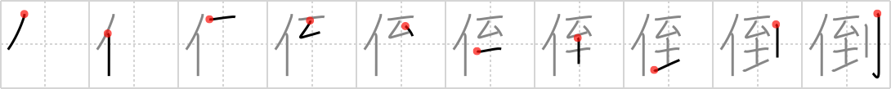

倒
← →
overthrow

Reading:
On-Yomi: トウ — Kun-Yomi: たお.れる、-だお.れ、たお.す
Heisig story:
Person . . . arrival.
Koohii stories:
1) [Django] 28-9-2007(245): The A-Team are planning to overthrow the government. However, they can't do a damn thing until Mr T arrives.
2) [somukeru] 6-3-2008(38): In Return of the Jedi, after a climactic light sabre battle, Luke and Vader overthrow the emporer (literally throwing him over the balcony).
3) [plumage] 19-8-2009(29): The OVERTHROW of democracy began at OBAMA's ARRIVAL at the White House. Hello Socialism!
4) [ImaginaryJapan] 24-12-2009(12): Upon his arrival in Japan, Khatzumoto was able to overthrow the notion that a foreigner can never speak real Japanese.
5) [mantixen] 1-9-2008(12): On arrival, Haruhi tries to overthrow the existing authority.